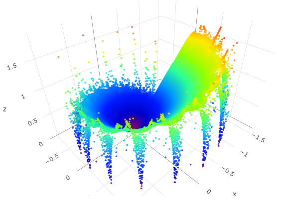

<!---*-Mode:javascript;-*--->
<html>

<div style="width:600px;">
    <div>
    <script type="text/javascript" id="MathJax-script" async
  src="https://cdn.jsdelivr.net/npm/mathjax@3/es5/tex-mml-chtml.js">
</script>

\(Mandelbrot : z_{1} = z_{0}^{n} + C \;(n = 17 + 3i)\)
		
    </div>
    
    <h3><a href="javascriptComplex/mandelbrot.html">⇒こちらで指数を変えて、実行できます。</a><br></h3>
</div>
<div style="width:600px;">
    <h2><a href="heart.html">ハートのアニメーション(Javascriptで描いてます)</a><br></h2>
</div>

<div style="width:600px;">
<h2><a href="spirograph_ani.html">Spirograph作ってみました(毎回違います)</a><br></h2>
</div>
<div style="width:600px;">
  <a class="twitter-timeline" href="https://twitter.com/TakagiHitoshi?ref_src=twsrc%5Etfw">Tweets by TakagiHitoshi</a> <script async src="https://platform.twitter.com/widgets.js" charset="utf-8"></script>
</div>

</html>
